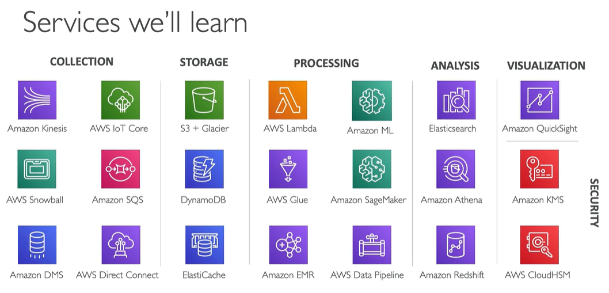
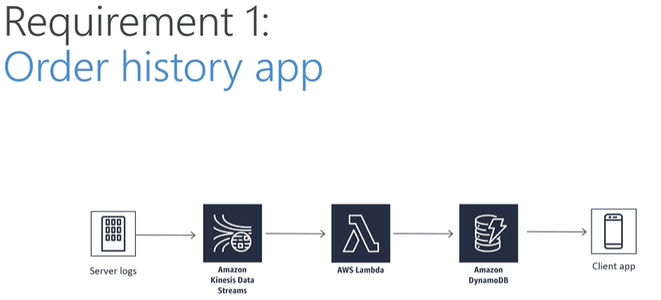
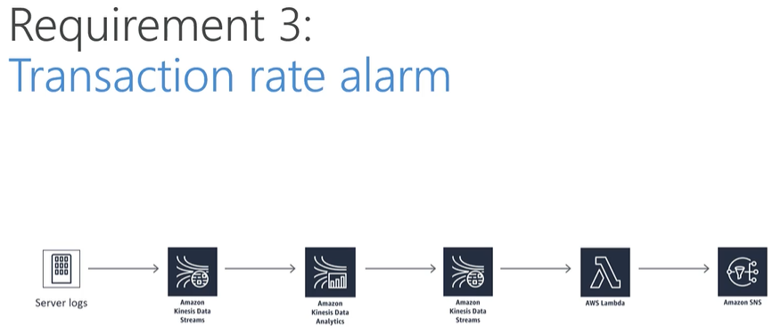
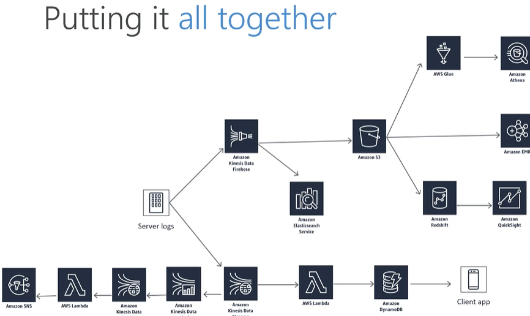

DAS-C01 certification info
Contents
DAS-C01 certification info#
aws certification info: link
exam code: DAS-C01 (previously - big data specialty BDS-C00, very similar content, but included Machine Learning)
challenging, very demanding
recommended AWS basic knowledge (architect), analytics background, but other certification are not required (historical associate cert was required, but now it’s not)
What exam validates#
Define AWS data analytics services and understand how they integrate with each other
explain how AWS data analytics services fit in the data lifecycle
collection
storage
processing
visualization
Scope#
collection (18% of exam)
kinesis/sqs
storage (22%)
s3
dynamodb
elasticache
processing (24%)
lambda
glue
emr
data pipeline
analysis and visualization (18%)
athena
redshift
quicksight
security (18%)
Other Certification Info#
certification exam cost: 300USD
exam length: 180 minutes, 65 questions
minimum passing score 750 on scale from 100-1000 (like in all other AWS exams, all question are randomized and can have different level of difficulty - number of points depends on this level)
there is additional 30 minutes of exam length for non-native speakers, you can get it by adding exam accomodation on exam registration page (https://www.certmetrics.com/amazon/candidate/exam_accommodations_default.aspx)
Trainings#
Udemy AWS Data Analytics#
https://www.udemy.com/course/aws-data-analytics/learn/lecture/13891508#overview
training materials: https://sundog-education.com/aws-certified-big-data-course-materials/ 
Training Case Study
case study based on huge ecommerce called Cadabra
first requirement - orders generated, received by kinesis, processed by lambda and results stored in dynamo available for client app 
second requirement - machine learning product recommendations, data received by kinesis firehose, stored in S3 and processed my emr
third requirement - transaction rate alarm, data received by kinesis, processed by lambda and sns notifies users 
near-real-time log analysis (kinesis received data and visualized by elasticsearch service - Kabana)
warehouse - kinesis received data and stored them in S3, redshift and athena analyses data

Cloud Guru AWS Certified Data Analytics Specialty#
https://acloudguru.com/course/aws-certified-data-analytics-specialty
course github repo: https://github.com/linuxacademy/Content-AWS-Certified-Data-Analytics—Speciality